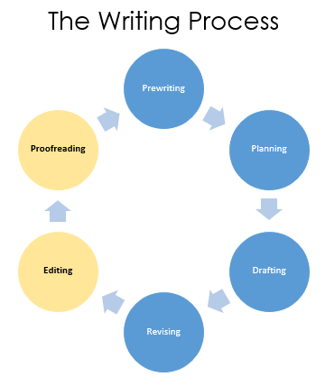

Reading • No submission required

Editing and Proofreading are the final two stages of the Writing Process — and the ones most connected to the Sentence Structure, Grammar/Punctuation/Mechanics, and Vocabulary criteria on the Grading Rubric.
Though often lumped together, they are genuinely different tasks that work best when done separately and in order — Editing first, Proofreading second. For a research essay, each stage has an additional layer: checking how your sources are being used and whether they’re cited correctly.
Improving how sentences are written. Are they clear? Concise? Well-constructed? For research essays, editing also means assessing whether each source is being used effectively and whether your own voice is still leading the argument.
Catching mechanical mistakes: grammar, spelling, punctuation, capitalization, and MLA formatting. For research essays, this includes verifying that every in-text citation is accurate and that every source in the essay appears in the Works Cited.
Editing a research essay works at two levels simultaneously: the sentence level (are my sentences clear and precise?) and the source level (are my sources working the way they should?). Work through both passes before moving on to proofreading.
A signal phrase introduces a quote or paraphrase by naming the author and characterizing their position. Relying on “According to [author]…” for every source becomes repetitive and weakens the sense of your own analytical voice. Use the options below to vary your introductions:
For a research essay, proofreading the MLA documentation is substantial enough to be its own dedicated pass — separate from checking grammar and spelling. A citation audit ensures that every source is correctly documented and that nothing has slipped through. Work through the three steps below before you finalize your essay.
Find every in-text citation in your essay, whether the author is identified in the signal phrase or in a parenthetical citation, and confirm that the same author appears on your Works Cited. The rule works both directions: if a source is cited in the essay, it must have a Works Cited entry; if a source has a Works Cited entry, it must appear at least once in the essay.
Students often remember to cite direct quotes but forget that paraphrases (restating a source’s idea in your own words) also require citation. Read through your essay for any sentences clearly based on a source’s ideas that don’t identify the author either in the signal phrase or in a parenthetical citation and correct them. Not doing so would constitute plagiarism and a violation of the college’s academic integrity policy.
Check that the Works Cited page itself is correctly formatted: alphabetical order by author’s last name, double-spaced throughout, hanging indent on each entry (first line flush left, subsequent lines indented ½”), and the words Works Cited centered at the top. All url addresses should be plain, black text: no color or underline.
Use the handouts below to review the sentence-level rules most relevant to academic writing. Open whichever is most useful as you edit and proofread your research essay.